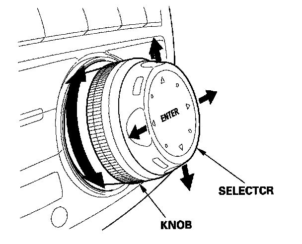

Traffic information is not being shown on map screen
Traffic information is not being shown on map screenIf your client complains that traffic is not being displayed, it could be because a traffic setting is not correct.
NOTE:
- The client's account must be active. Call XM customer care to verify the account status before troubleshooting.
- Currently, real-time traffic (display of traffic flow and/ or incidents) is available in over 30 metropolitan areas, and it is likely to grow. The current list can be found at www.acura.com/realtimetraffic. The site also contains a traffic demo and FAQs.
- Traffic flow speed is displayed as bands of red, orange, and green alongside of the freeway. Some or all freeways in a covered city may not have traffic coverage. The link above shows the freeways covered for each city.
- Incident icons (yellow or red diamonds) point put accidents, construction areas, or weather conditions.
- Not all areas have "traffic flow" and "traffic icons." It is possible that an area may have one or the other.
Even if your area does not receive real-time traffic, complete the steps below to make sure the system is set up correctly.
1. Check if your area has real-time traffic coverage. From an iN workstation, go to www acura.com.
2. Make sure the keyless access remote is linked. When you turn the ignition switch ON (II) with a linked remote, you will see WELCOME DRIVER 1 or WELCOME DRIVER 2 on the multi-information display (MID).
- If you see WELCOME DRIVER 1 or WELCOME DRIVER 2 on the MID, go to step 4.
- If you do not see WELCOME DRIVER 1 or WELCOME DRIVER 2 on the MID, go to step 3.
3. Link the remote
- Press and hold the LOCK and UNLOCK buttons on the remote until its LED blinks once.
- Lock and unlock the driver's door once with the remote.
NOTE: It's important to use the same remote (Driver 1 or Driver 2) that your client's used when they noticed problems with the real-time traffic monitor. This is because each remote will recall the customized settings and the data for that driver, including real-time traffic settings. Ideally, check both remotes to make sure the real-time traffic settings are correct.
4. Park the vehicle outside where you have a clear view of the southern sky. Turn on the XM radio, and make sure it receives at least channels 000, 001,174, and 247 (XM's preview mode).
- If the XM radio gets at least channels 000, 001, 174, and 247, go to step 5.
- If the XM radio does not get at least channels 000,001,174, and 247, troubleshoot the XM radio, repair as needed then go to step 5.

5. In the lower left corner of the navi map screen make sure the scale is set to 1/2, 1, 2, or 5 miles. (The scale must be set to one of these values to see real-time traffic). To change the scale, turn the interface knob left or right as needed.
NOTE: Many AcuraLink functions are selected using the interface dial at the center of the dashboard. The interface dial has two parts a gray knob behind a silver selector. The knob turns left and right. The selector can be pushed left, right, up, down, and in.
6. Check if the navi screen shows real-time traffic.
- If you do not see real-time traffic, go to step 7.
- If you see real-time traffic, or if you are not in an area that receives it, return the vehicle to your client.
7. Go into the map menu:
- If you were using the interface selector to scroll on the map screen, press the MAP/GUIDE button.
- Press the interface selection in.
8. In the map menu, turn the interface knob to show icon on map, then press the interface selector in. The traffic icon on the far left should be solid blue. If it is not blue, turn the interface knob until the traffic icon is outlined in blue, then press the selector in, and go to step 10.
If the traffic icon does not change to solid blue, do the AcuraLink self-diagnostic function, then go to step 9.
9. Reset the AcuraLink control unit, then repeat step 8:
- With the ignition switch in the LOCK (0) position, pull the No. 5 (10 A) fuse from the under-dash fuse/relay box. Wait 20 seconds, then reinstall the fuse.
- Enter the audio and navigation system anti-theft codes.
10. From the "map menu," go into icon options by pressing the interface selector to the right.
11. Turn the interface knob to traffic, then press the selector in.
12. Press the interface selector into select traffic speeds. Turn the knob to traffic icons, and press the selector in again. Both traffic speeds and traffic icons must be solid blue. When both are solid blue, select done by pushing the selector to the right.
13. Check if the map screen shows real-time traffic.
- If you do not see real-time traffic, go to step 14.
- If you see real-time traffic, or if you are not in an area that receives it, return the vehicle to your client.
14. See if real-time traffic is currently being broadcast by checking real-time traffic on another real-time traffic equipped vehicle with a known-good navigation system. Wait about 5 minutes for the display screen to refresh.
- If the other real-time traffic equipped vehicle displays real-time traffic, go to step 15.
- If the other real-time traffic equipped vehicle does not display real-time traffic, call Acura Client Service at 800-382-2238 and ask about any known traffic system outages or blackouts in your area.
15. Reset the AcuraLink control unit
- With the ignition switch in the LOCK (0) position, pull the No. 5 (10 A) fuse from the under-dash fuse/relay box. Wait 20 seconds, then reinstall the fuse.
- Enter the audio and navigation system anti-theft codes.
16. Check if the map screen shows real-time traffic.
- If you still do not see real-time traffic, go to step 17.
- If you see real-time traffic, or if you are not in an area that receives it, return the vehicle to your client.
17. Make sure the vehicle's XM Navi Traffic account status is active.
- Call XM at 800-852-9696.
- From the automated menu, select 1 (dealers and retailers) and from the next menu, select 3 (technical support).
- Ask the agent to check the XM Navi Traffic account status.
- If the account is active and there are no known outages or blackouts, go to step 18.
- If the account is inactive, get it activated, then ask for a rapid refresh. (A rapid refresh takes 15 to 30 minutes.)
18. Check if the map screen shows real-time traffic.
- If you still do not see real-time traffic, go to step 19.
- If you see real-time traffic, or if you are not in an area that receives it, return the vehicle to your client.
19. Install a known-good AcuraLink control unit, and check the real-time traffic.
Does the map screen show real-time traffic?
YES - Replace the AcuraLink control unit (XM receiver) and register it with XM radio and Acura client service.
NO - Replace the navigation control unit.